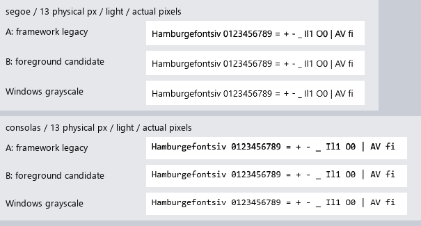

B was approved on 20 October 2026 and is now the shared default. The reviewed weight guard is 0.045. The original measurements remain below. Further native-fidelity work is documented separately.
Start with the current Pad++ host: 100% DPI A/B · 150% DPI A/B. A uses current host contrast 0.75; B uses foreground correction with maximum contrast 0.5.
The rows below isolate the engine change against the framework's 0.5 baseline. Lower native-reference error is a diagnostic, not a readability verdict.

DPI correction: the original software images labeled 144 DPI were actually 96 DPI. Their reviewed bytes are preserved. See the erratum and corrected captures.
These comparisons use maximum contrast 0.5 in both A and B. The host editor uses its real light/dark themes. Pad++ currently supplies a light skin only.
| Application | Theme | 100% | 150% |
|---|---|---|---|
| Older Aurora Notepad | light | 96 DPI | 144 DPI |
| Older Aurora Notepad | dark | 96 DPI | 144 DPI |
| Host editor primitives | light | 96 DPI | 144 DPI |
| Host editor primitives | dark | 96 DPI | 144 DPI |
| Pad++ (normalized 0.5 baseline) | light | 96 DPI | 144 DPI |
Both modes captured two changing marker states from the actual screen. Each differed from software in 12 pixels across both frames, with maximum channel error 1.
This first pass adjusts grayscale coverage according to foreground luminance. It preserves shaping, glyph metrics and near-white coverage. It does not implement full background-sensitive gamma correction or repair experimental hinting.
Implementation, test results and known failures · Measurements · Validation record